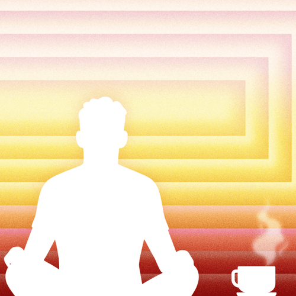

Mit der Academy erhaltet ihr im Business-Plan praxisnahe Lernmodule rund um Facilitation und wirksame Transformation.
Gemeinsam mit 9 Spaces zeigt Plan International Deutschland, wie wertebasiertes Arbeiten Orientierung gibt – nach innen wie nach außen.

Mindestens einmal am Tag solltest du dir Zeit für deine Ziele und Bedürfnisse nehmen. Mit diesem Tool baust du dir eine Routine, die funktioniert.
Diese Achtsamkeitsmethode stammt aus der MBSR und hilft dabei, mehr Gelassenheit, Körpergefühl und innere Ruhe zu entwickeln.
Mit einer guten Pause in den Tag starten.
Um gut mit anderen arbeiten zu können, ist es wichtig, sich immer besser selbst kennenzulernen.